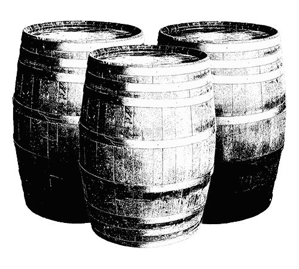

The Rise of the Rednecks
OR: THE MUSTACHE THAT DEFINED A GENERATION
“This is the slice of cinematic genius where Burt Reynolds is the Orson Wells, and Deliverance is the Citizen Kane.” — Funk or Die
Beginning in 1972, Burt Reynolds was ushering in a new era. It was called the “New South,” a contemporary revival of a region characterized by the working class, good ‘ole boys and of course, mustaches. Glorious, glorious mustaches. And it was kind of a big deal. Burt Reynolds was the #1 money-making star in Hollywood from 1978-1982.
So dust off that cowboy hat, polish up that turquoise belt buckle, and let’s see what it’s like to be the king of all rednecks.
The Theme Songs
Before we start, we need to pick the perfect Jerry Reed Soundtrack. Click on an 8-track and load ’em up.
-
Smokey and the Bandit
East Bound and Down
-
Smokey and the Bandit II
Texas Bound and Flying
-
Gator
Gator
-
W.W. and the Dixie Dancekings
A Friend
The Redneck Name Selector
Fire up the CB and let’s hit the road. Spin the wheel below to get your very own handle.
Sonny Hooper
Hooper

The Chase
To the lyrics of "East Bound and Down"
“East bound and down, loaded up and truckin', We're gonna do what they say can't be done. ” — Jerry Reed
A typical Burt Reynolds tale begins and ends with one thing: a car chase. He’s constantly running from the law and it’s almost always because he’s hauling something he shouldn’t be. According to Tico Romao’s “Guns and Gas: Investigating the 1970s Car Chase Film,” there are three types of car chase films: police/crime, pursuit, and comedy. Mr. Reynolds embodies all three.
The cars
“Keep your foot hard on the pedal, Son. Nevermind them brakes. Let it all hang out ’cause we got a run to make.”

Trigger
1976 Pontiac Trans AM
- 462 cu. in. V8
- 5-speed manual
- 4-pass, 2-door coupe
- T-TOP Roof
After the success of smokey and the bandit, trans am sales increased by 500%. rumor has it that the one used for the bridge jump scene was outfitted with a chevrolet engine.
Son of trigger
1978 Pontiac Trans AM
The bandit rode again in part 2. At the time, it was the largest car chase in film history.
Rocket Power
1978 Pontiac Trans AM
Performed death defying stunts in a hooper. Red instead of the standard issue black.
Moon Special
1971 ford custom 500
Ran Moonshine in White Lightning. Equipped with re-inforced rear springs.
Chicken Pit
1983 Ford Thunderbird
Destroyed the competition in stroker ace. a four time champ on the nascar circuit.

Golden Anniversary
1955 Oldsmobile
Used for robbing gas stations and transporting country bands in W.W. and The Dance Kings.

The mean machine
1972 citroen SM
A one man wrecking crew in the longest yard. located in palm springs at the bottom of a river.
Transcon Medi-Van
1978 dodge ambulance
Raced cross-country in the cannonball run. also used by the director & writer in the actual race.
Nuke Tac Team
1981 Imperial Limousine
Carried a super hero and nuns in cannonball run 2. also seen in sharkey’s machine and stick.
The contraband
“The boys are thirsty in Atlanta and there's beer in Texarkana. and we’ll bring it back no matter what it takes.”
Guns
Finest quality!

Shark! (1969)
Liquor
Rum! Prohibition Special!
Lucky Lady (1975)
Moonshine
Straight from the okefenokee swamp!
White lightning (1973) & gator (1976)
Running the best goods the South has to offer!
Beer
Only coors in Georgia

Smokey and the bandit (1977)
Elephant
2 for 1 special!
Smokey and the bandit II (1980)
The law
“Ol' Smokey's got them ears on and he's hot on your trail. He aint gonna rest 'til you're in jail.”
Buford T. justice
Played by Jackie Gleason
The Sheriff in Smokey and the Bandit parts 1, 2, and 3
Gleason reportedly modeled his character after Burt Reynolds' description of his father, a Florida police officer. in fact, BUford t. justice was a real florida highway patrolman that his father knew.
Gaylord Justice
Played by Jackie Gleason
Buford’s brother in smokey and the bandit 2. Credited as “Ms. Jackie Gleason.”

Reginald Van Justice
Played by Jackie Gleason
Buford’s other brother. based on a character from Gleason’s early career.
Rudolph Hazen
Played by Eddie Albert
Sadistic warden of the citrus state prison in the longest yard.
Wilhelm Knauer
Played by Ed Lauter
The coach of the guards in the longest yard. carries out Hazen’s ruthless orders.
Deacon John Wesley Gore
Played by Art Carney
A bible-thumping ex-lawman hired to track down W.W. and the Dixie Dancekings.
J.C. Conners
Played by Ned Beatty
A crooked Arkansas sheriff that kills Gator Mcklusky’s brother and accepts bribes.


Leading ladies
“Women are my drugs and alcohol.”—Burt reynolds
-
Sally Field
The one that got away
- Smokey and the Bandit (1977)
- The End (1978)
- Hooper (1978)
- Smokey and the Bandit II (1980)
“What I look for mostly in a man is humor, honesty, and a mustache. Burt has all three.”
-
Lauren Hutton
The Covergirl
- Gator (1976)
- Paternity (1981)
- Malone (1987)
The only woman out of the four that hasn’t been romantically linked with reynolds in real life.
-
Loni Anderson
The real life wife
- Stroker Ace (1983)
- All dogs go to heaven (1989)
Met reynolds on the set of the Merv Griffin show in 1962 and was married to him from 1988 - 1993.
-
Dolly Parton
Miss Mona
- The best little whorehouse in Texas (1982)
Rumored (and denied) to have had an affair with Reynolds during the filming of their only movie together.
The Partners in Crime
“If I'd have been gay, it would've saved me millions, just because we'd still be happily married.”—Burt Reynolds
-

Dom Deluise
The Comic Relief
- Silent Movie (1976)
- The End (1978)
- Smokey and the Bandit II (1980)
- The Cannonball Run (1981)
- The Best Little Whorehouse in Texas (1982)
- Cannonball Run II (1984)
- All dogs go to heaven (1989)
Directed stage productions at the Burt Reynolds theater in Jupiter, FL.
-
Jerry Reed
The snowman
- W.W. and the Dixie Dancekings (1975)
- Gator (1976)
- Smokey and the bandit (1977)
- Smokey and the bandit II (1980)
- Smokey and the bandit Part 3 (1983)
- Strocker Ace (1983)
Played the sidekick in all but one film (Gator), with reynolds, where he played the villain.
-
The director
- Smokey and the bandit (1977)
- Hooper (1978)
- Smokey and the bandit II (1980)
- The cannonball run ( 1981)
- Stroker ace (1983)
- Cannonball run II (1984)
Was also a stuntman for reynolds and lived in his guesthouse for almost 12 years.
-
The versatile one
- Deliverance (1972)
- White lightning (1973)
- W.W. and the Dixie Hall dance kings (1975)
- Stroker Ace (1983)
- Switching Channels (1988)
Gets brutalized by rednecks in Deliverance and Brutalizes rednecks in White Lightning.

Bonus: The Lost Roles
These are some of the roles that our hero was rumored to have turned down.
-
James Bond
Live and Let Die
You can’t fault him for this one. Along with Clint Eastwood, Burt felt that Bond had to be British.
-
Han Solo
Star Wars
Star Wars had everything—fast spaceships, police chases, contraband, sidekicks, and a love interest.
-
John McClane
Die Hard
Burt turned down the role after arnie and Sylvester Stallone did. Bruce Willis was the 6th choice.
-
Superman
Superman: The Movie
Rumored to have turned down the role along with Robert Redford. would have kept the mustache, of course.